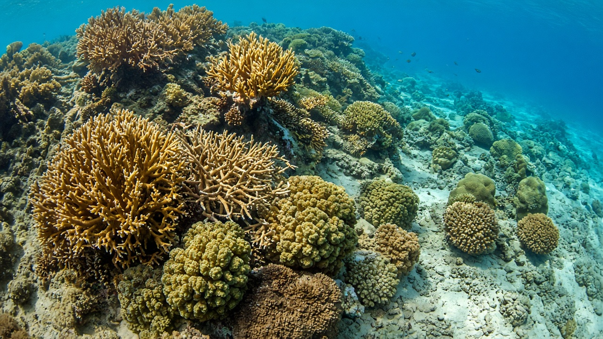
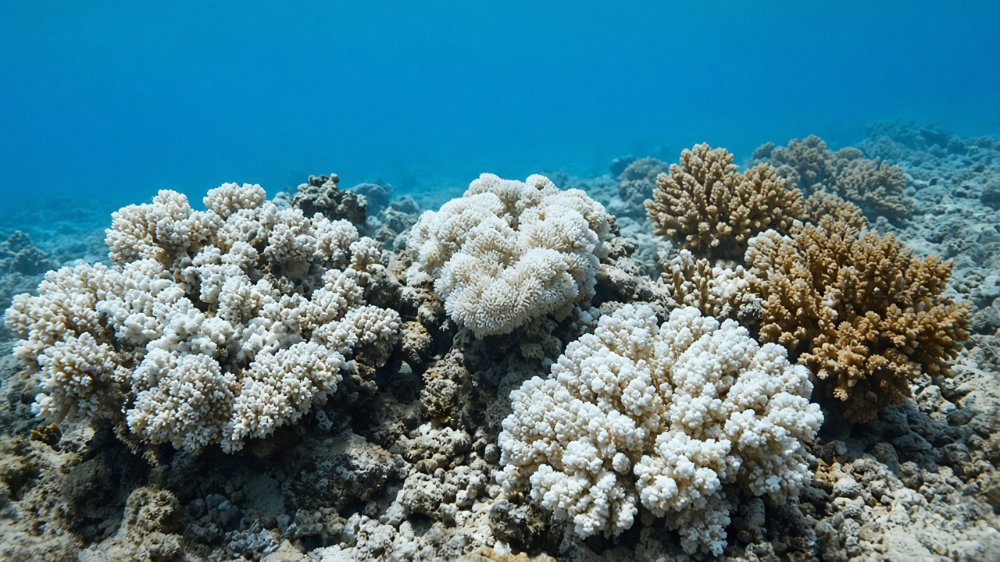
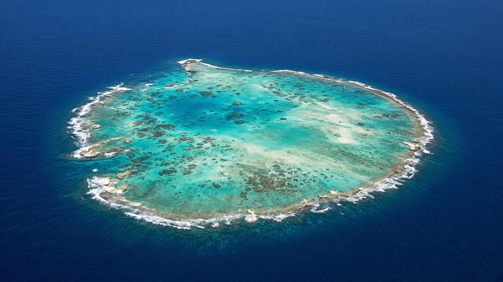

Coral Reefs and Tropical Marine Ecosystems
Published on August 20, 2026

Coral reefs are living limestone frameworks built by colonies of tiny animals that host photosynthetic algae in their tissues. That partnership thrives in clear, warm, sunlit water with low nutrients, which is why reefs flourish on tropical shelves and atolls rather than in muddy river mouths. Fringing reefs hug coastlines, barrier reefs stand offshore, and atolls ring subsided volcanic peaks; each creates lagoons, drop-offs, and crevices that shelter fish, molluscs, crustaceans, and turtles. Although reefs occupy a tiny fraction of ocean area, they support a disproportionate share of tropical marine species and break storm waves before they reach shore.
Tropical marine ecosystems also include seagrass meadows behind reefs, mangrove fringes, and open lagoon waters that exchange larvae on tidal pulses. Crown-of-thorns starfish outbreaks, bleaching when heat stresses the algal partners, and disease can kill living coral and leave rubble that no longer grows. Sediment and nutrient plumes from rivers, coastal construction, and aquaculture cloud the water and favour algae over coral. The Andaman Sea and parts of the Indian Ocean hold reefs that South Asian students rarely see in person, yet they are connected to monsoon climate, shipping, and tourism economies far beyond the reef crest.
Reef science now combines field transects, satellite heat alerts, and larval-connectivity models to decide where restoration and fishing closures will work. Transplanting coral fragments helps only if water quality, herbivorous fish, and temperature still allow growth. Education that explains the animal–alga partnership, the calcium-carbonate skeleton, and the difference between a living reef and a dead limestone platform prepares visitors and managers to reduce anchoring damage, sunscreen and sewage loads, and blast or cyanide fishing. Protecting tropical reefs is therefore an oceanographic and chemical problem as much as a wildlife problem: light, temperature, and water clarity set the envelope in which the ecosystem can persist.

मुंगा चट्टान साना जनावरका उपनिवेशले बनाउने जीवित चूना ढुंगा ढाँचा हुन् जसले तन्तुमा प्रकाश संश्लेषक शैवाल राख्छन्। त्यो साझेदारी सफा, न्यानो, सूर्य लाग्ने र कम पोषक पानीमा फस्टाउँछ, त्यसैले चट्टान हिलो नदी मुखमा होइन उष्ण शेल्फ र एटोलमा फैलिन्छन्। किनारा टाँसिने फ्रिन्जिङ चट्टान, टाढा उभिने अवरोध चट्टान र डुबेका ज्वालामुखी चुचुरो घेर्ने एटोलले लगुन, अचानक गहिराइ र दरार बनाउँछन् जहाँ माछा, मोलस्क, क्रस्टेशियन र कछुवा बस्छन्। चट्टानले महासागर क्षेत्रको सानो अंश ओगट्छन् तर उष्ण समुद्री प्रजातिको असमान ठूलो हिस्सा समर्थन गर्छन् र गाउँसम्म पुग्नुअघि आँधी लहर तोड्छन्।
उष्ण समुद्री पारिस्थितिकीमा चट्टानपछाडि समुद्री घाँस मैदान, म्यानग्रोभ किनारा र ज्वारीय स्पन्दनमा लार्भा साटासाट गर्ने खुला लगुन पानी पनि पर्छन्। काँडातारा स्टारफिसको प्रकोप, तापले शैवाल साझेदार तनावमा पर्दा हुने विरञ्चन र रोगले जीवित मुंगा मार्न सक्छन् र अब नबढ्ने गेग्रान छोड्न सक्छन्। नदी, तटीय निर्माण र जलकृषिका तलछट तथा पोषक प्लुमले पानी धमिलो पार्छन् र मुंगामाथि शैवाललाई फाइदा दिन्छन्। अण्डमान सागर र हिन्द महासागरका भागमा दक्षिण एसियाली विद्यार्थीले प्रत्यक्ष कमै देख्ने चट्टान छन्, तर ती मनसुन जलवायु, ढुवानी र पर्यटन अर्थतन्त्रसँग चट्टानको मुकुटभन्दा टाढा जोडिएका छन्।
चट्टान विज्ञान अहिले क्षेत्र रेखा-सर्वेक्षण, उपग्रह ताप चेतावनी र लार्भा-जडान मोडेल मिलाएर पुनर्स्थापना र माछा मार्ने बन्द कहाँ काम गर्छ निर्णय गर्छ। मुंगा टुक्रा सार्नुले पानी गुणस्तर, शाकाहारी माछा र तापक्रम अझै वृद्धि दिने अवस्थामा मात्र सहयोग गर्छ। जनावर–शैवाल साझेदारी, क्याल्सियम-कार्बोनेट कंकाल र जीवित चट्टान तथा मृत चूना चौताराबीचको फरक व्याख्या गर्ने शिक्षाले आगन्तुक र व्यवस्थापकलाई लंगर क्षति, सूर्यरक्षा मल र ढल भार तथा विस्फोट वा साइनाइड माछा मार्ने घटाउन तयार पार्छ। उष्ण चट्टान जोगाउनु त्यसैले वन्यजन्तु समस्या मात्र होइन समुद्र वैज्ञानिक र रासायनिक समस्या पनि हो: प्रकाश, तापक्रम र पानीको स्वच्छताले पारिस्थितिकी बाँच्ने खोल निर्धारण गर्छ।

प्रवाल भित्तियाँ छोटे जंतु उपनिवेशों द्वारा बनाई गई जीवित चूना पत्थर संरचनाएँ हैं जो ऊतकों में प्रकाश संश्लेषक शैवाल रखती हैं। वह साझेदारी साफ़, गर्म, सूर्य-प्रकाशित और कम पोषक जल में फलती है, इसलिए भित्तियाँ कीचड़ नदी मुखों में नहीं उष्ण शेल्फ और एटोल पर फलती-फूलती हैं। तट से चिपकी फ्रिंजिंग भित्तियाँ, दूर खड़ी अवरोध भित्तियाँ और डूबी ज्वालामुखी चोटियों को घेरने वाले एटोल लैगून, अचानक गहराई और दरारें बनाते हैं जहाँ मछली, मोलस्क, क्रस्टेशियन और कछुए रहते हैं। भित्तियाँ महासागर क्षेत्र का छोटा अंश घेरती हैं पर उष्ण समुद्री प्रजातियों का असमान बड़ा हिस्सा समर्थन करती हैं और गाँव तक पहुँचने से पहले तूफानी तरंगें तोड़ती हैं।
उष्ण समुद्री पारिस्थितिक तंत्रों में भित्ति के पीछे समुद्री घास मैदान, मैंग्रोव किनारे और ज्वारीय स्पंदन पर लार्वा का आदान-प्रदान करने वाले खुले लैगून जल भी शामिल हैं। काँटेदार तारा स्टारफ़िश प्रकोप, ऊष्मा से शैवाल साझेदार तनाव में आने पर विरंजन और रोग जीवित प्रवाल मार सकते हैं और अब न बढ़ने वाला मलबा छोड़ सकते हैं। नदी, तटीय निर्माण और जलकृषि के तलछट तथा पोषक प्लूम जल धुंधला करते हैं और प्रवाल पर शैवाल को लाभ देते हैं। अंडमान सागर और हिन्द महासागर के भागों में दक्षिण एशियाई छात्रों के प्रत्यक्ष कम दिखाई देने वाली भित्तियाँ हैं, पर वे मानसून जलवायु, नौवहन और पर्यटन अर्थव्यवस्थाओं से भित्ति मुकुट से कहीं दूर जुड़ी हैं।
भित्ति विज्ञान अब क्षेत्र रेखा-सर्वेक्षण, उपग्रह ऊष्मा चेतावनी और लार्वा-संयोजन मॉडल मिलाकर तय करता है कि पुनर्स्थापना और मछली पकड़ने का बंद कहाँ काम करेगा। प्रवाल टुकड़े स्थानांतरित करना तभी मदद करता है जब जल गुणवत्ता, शाकाहारी मछली और तापमान अभी भी वृद्धि देते हों। जंतु–शैवाल साझेदारी, कैल्शियम-कार्बोनेट कंकाल और जीवित भित्ति तथा मृत चूना मंच के अंतर समझाने वाली शिक्षा आगंतुकों और प्रबंधकों को लंगर क्षति, सूर्यरक्षा मल और मलजल भार तथा विस्फोट या साइनाइड मछली पकड़ने घटाने को तैयार करती है। उष्ण भित्तियाँ बचाना इसलिए वन्यजीव समस्या ही नहीं समुद्र वैज्ञानिक और रासायनिक समस्या भी है: प्रकाश, तापमान और जल की स्वच्छता वह खोल तय करती है जिसमें तंत्र टिक सकता है।